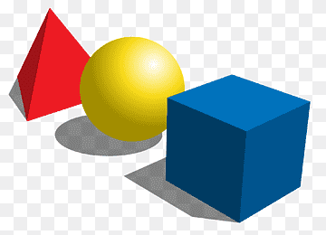

Clique aqui para baixar:
Gerador de MatrizesImportante: O arquivo Gerador de matrizes.exe só irá funcionar na sua máquina se estiver na mesma pasta que os seus aquivos .dll. Caso contrário, o programa não encontrará os arquivos que foram compilados junto com ele e falhará na execução.